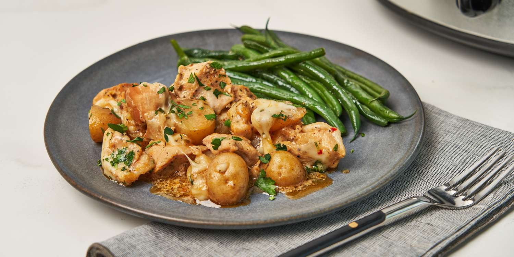

Recipe List
Slow Cooker Parmesan Garlic Chicken and Potatoes

Description
This crock pot Parmesan garlic chicken and potatoes is so quick to assemble using prepared garlic Parmesan sauce,
and the result is a creamy, savory dish of tender, juicy chicken and indulgent, cheesy potatoes.
Ingedients
- 2 pounds potatoes, cut into 1.5 to 2 inch chunks
- 2 tablespoons olive oil
- 1 teaspoon kosher salt
- 3/4 teaspoon ground black pepper
- 1/2 teaspoon paprika
- 2 pounds skinless, boneless chicken breasts
- 1 cup creamy Parmesan garlic sauce, such as Buffalo Wild Wings® Parmesan Garlic Sauce
- 1/2 cup water or chicken stock
- 2 cups shredded mozzarella cheese
- 1/4 cup grated Parmesan cheese (optional)
- 1 tablespoon chopped fresh parsley, or to taste (optional)
Steps
- Combine potatoes, olive oil, 3/4 teaspoons salt, 1/2 teaspoon black pepper, and paprika in the bottom of a
slow cooker and stir until well coated. Add chicken pieces on top and sprinkle with remaining salt and
pepper. Whisk Parmesan garlic sauce and water together in a bowl until well incorporated. Pour mixture over
chicken and potatoes.
- Cook on High for 4 hours (or on Low for 6 hours), or until chicken is cooked through and potatoes are
tender. During the last 20 minutes of cooking, add mozzarella and Parmesan and continue to cook, covered.
Sprinkle with parsley to serve.
Recipe List